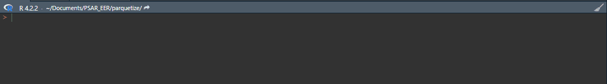

Un package R
pour convertir des données
au format parquet
Note
Quelques rappels sur le format parquet ici
Convertir des fichiers de différents formats en fichiers parquet
Plus-value de parquetize : faciliter la vie des utilisateurs et fournir un cadre pour appliquer des règles lors des conversions de fichiers.
Les formats gérés : SAS, SPSS, Stata, csv, json, rds, fst, DBI…
| Format de fichier | Fonctions de parquetize |
|---|---|
| SAS, SPSS, Stata | table_to_parquet |
| csv | csv_to_parquet |
| rds | rds_to_parquet |
| fst | fst_to_parquet |
| sqlite, db, sdb | sqlite_to_parquet |
| DBI databases | DBI_to_parquet |
| json | json_to_parquet |
# Conversion from a local csv file to a partitioned parquet file :
csv_to_parquet(
path_to_file = parquetize_example("region_2022.csv"),
path_to_parquet = tempfile(fileext = ".parquet"),
partition = "yes",
partitioning = c("REG")
)
#> Reading data...
#> Writing data...
#> ✔ Data are available in parquet dataset under /tmp/RtmpMT4bYz/file157830a758fa.parquet
#> Writing data..
Un site web dédié au package
Une documentation qui accompagne chaque fonction.
Un article qui présente comment convertir un gros fichier lorsqu’on on est limité par la mémoire vive (RAM) de son espace de travail.
Autre paramètre : sélectionner les variables qui seront à conserver dans le fichier parquetisé (sans-doute pas utile pour l’URDA)
Autre paramètre : pour les fichiers volumineux, il est possible d’effectuer la conversion par “chunk” soit par “bout” de table (cf. la vignette).
Autre paramètre : le mode de compression choisi pour les fichiers parquet.
table_to_parquet pour les fichiers SASVoici ses arguments :
table_to_parquet(
path_to_file,
path_to_parquet,
max_memory = NULL,
max_rows = NULL,
chunk_size = lifecycle::deprecated(),
chunk_memory_size = lifecycle::deprecated(),
columns = "all",
by_chunk = lifecycle::deprecated(),
skip = 0,
partition = "no",
encoding = NULL,
chunk_memory_sample_lines = 10000,
compression = "snappy",
compression_level = NULL,
...
)Conversion d’un fichier SAS vers un fichier parquet unique
Conversion d’un fichier SAS vers un fichier parquet multiple en fractionnant les données selon le nombre de lignes.
table_to_parquet(
path_to_file = system.file("examples","iris.sas7bdat", package = "haven"),
path_to_parquet = tempfile(),
max_rows = 50, # On fractionne la table iris toutes les 50 lignes
encoding = "utf-8"
)
#> Reading data...
#> Writing file1578a575aa3-1-50.parquet...
#> Reading data...
#> Writing file1578a575aa3-51-100.parquet...
#> Reading data...
#> Writing file1578a575aa3-101-150.parquet...
#> Reading data...
#> ✔ Data are available in parquet dataset under /tmp/RtmpMT4bYz/file1578a575aa3/Le fichier parquet peut ensuite être reconstitué avec la fonction rbind_parquet().
Conversion d’un fichier SAS vers un fichier parquet multiple en fractionnant les données en fonction de la consommation de mémoire vive.
table_to_parquet() peut déterminer le nombre de lignes à placer dans un fichier en fonction de la consommation de mémoire avec l’argument max_memory exprimé en Mb.
Le code suivant fractionne un fichier volumineux en plusieurs fichiers de 2 000 Mb (soit 250 Mo) :
Le package parquetize peut être l’occasion de mettre en place certaines bonnes pratiques :
Un package disponible sur le CRAN
Le dépôt github du projet
Qui a besoin de vous pour être enrichi ou pour nous faire remonter des problèmes => par ici 🚀
Les auteurs : Damien Dotta et Nicolas Chuche
Merci
Présentation à l’URDA (Insee)